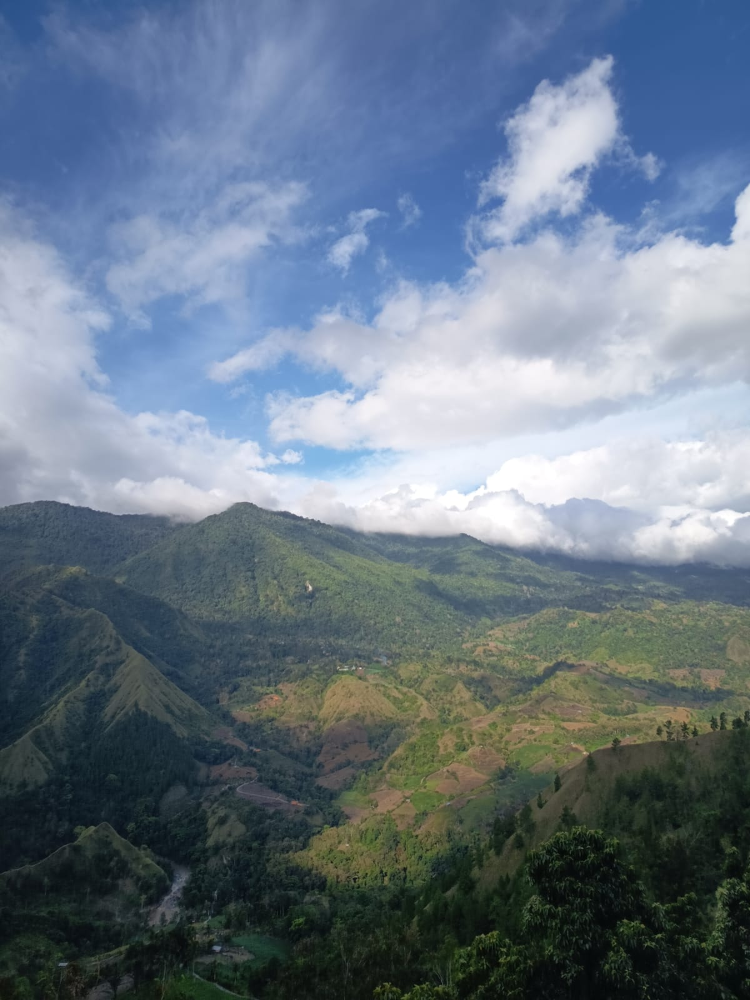
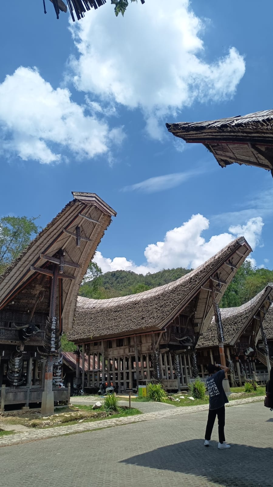
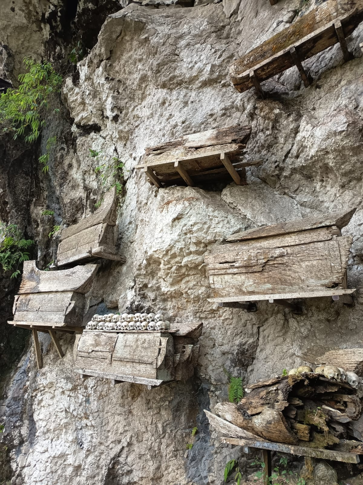
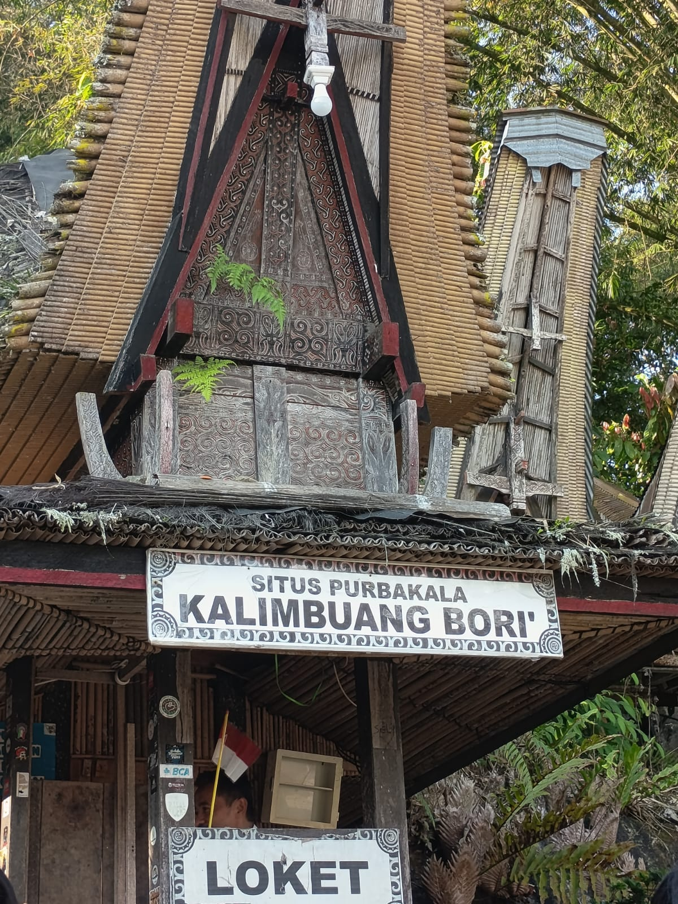
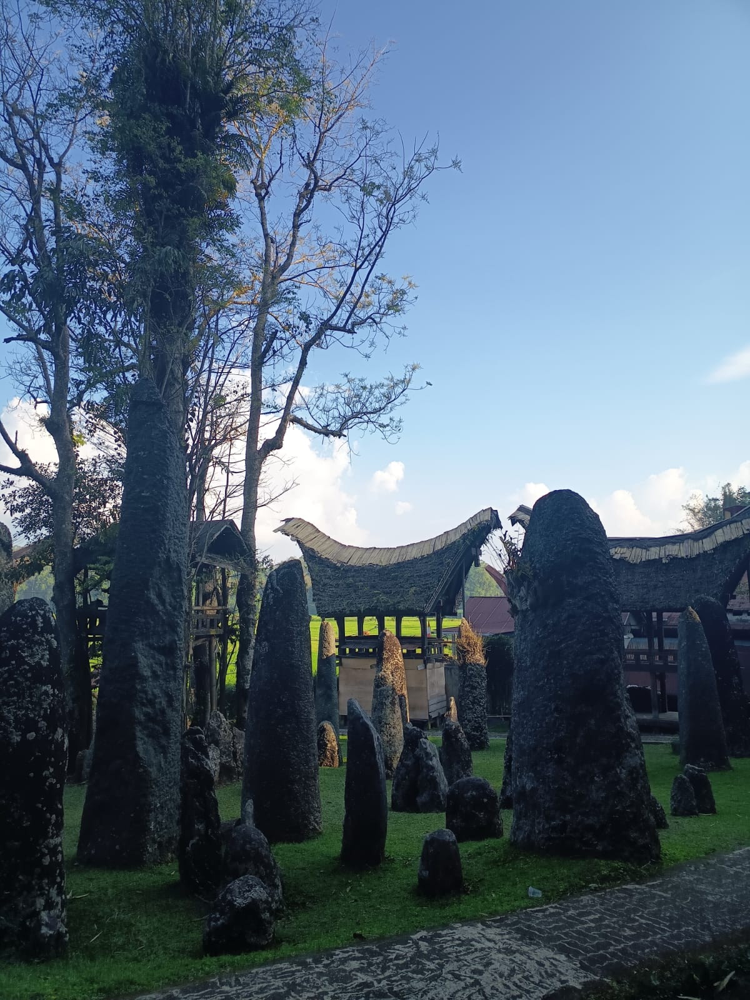

Halaman ini berisi tentang tempat-tempat wisata yang berada di Sulawesi Selatan.
1. Gunung Nona
Gunung Nona Enrekang atau Gunung Nona terletak di Kecamatan Anggeraja,
Kabupaten Enrekang, Provinsi Sulawesi Selatan. Gunung Nona Enrekang yang aslinya bernama
Gunung Buttu Kabobong menjadi tempat singgah para pelancong yang akan menuju ke Tana Toraja.
Para pelancong dapat singgah untuk melepas lelah sambil menikmati keindahan gunung tersebut.
Gunung Nona Enrekang adalah salah satu wisata unggulan di Kabupaten Enrekang.
 |
2. Kete Kesu
Desa Kete Kesu adalah salah satu tempat wisata di Toraja Utara yang cukup populer.
Terutama terkait kekentalan adat istiadat dan beberapa peninggalan sejarahnya.
Pemandangan utama yang akan disaksikan di kawasan ini adalah deretan rumah adat
tongkonan yang berjejer rapi. Rumah-rumah adat khas Toraja ini sangat menarik untuk dijadikan spot foto.
Masuk lebih dalam, pengunjung akan menemukan peninggalan purbakala berupa kuburan batu yang berumur ratusan tahun.
  |
3. Kalimbuang Bori
Sekitar 8 km ke sebelah utara Rantepao, terdapat sebuah situs wisata berisi hamparan
bebatuan besar mirip stonehenge di Inggris. Batu-batu besar atau yang menhir ini
merupakan peninggalan zaman purba megalitikum. Ratusan menhir dengan berbagai ukuran
ditancapkan di sebuah lahan berumput dan menjulang tinggi. Bagi masyarakat Toraja,
tempat ini biasanya dijadikan tempat upacara adat pemakaman bagi para pemuka adat atau keluarga bangsawan tinggi yang meninggal.
  Foto-foto dan video yang berada dalam blog ini diambil sendiri oleh Gaizka |